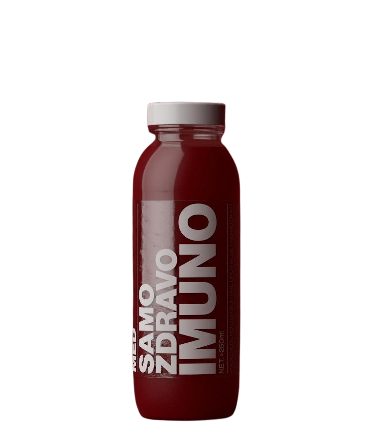
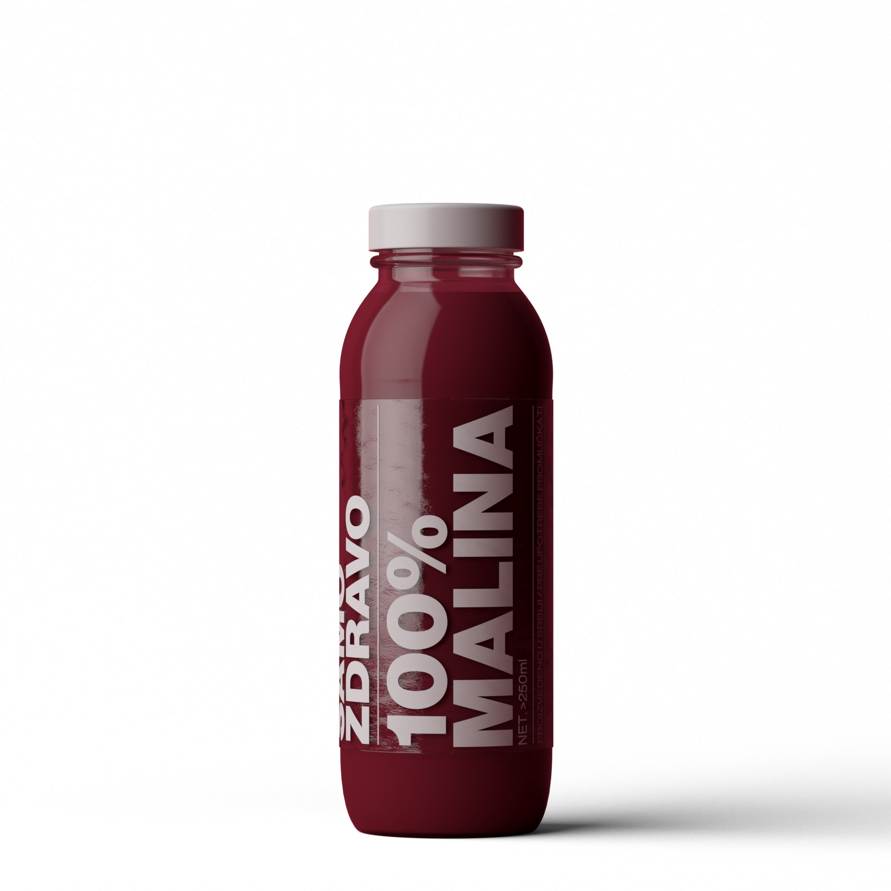
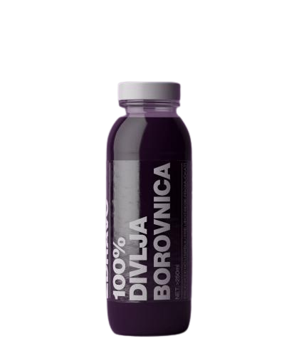
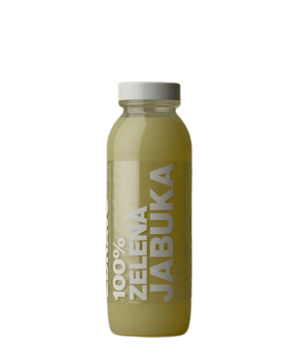

IMUNO SMOOTHIE
Snažna kombinacija malina, kupina i aronije obogaćena vitaminom C i cinkom za jačanje imuniteta. Savršen izbor za one koji žele prirodnu zaštitu organizma uz uživanje u bogatom voćnom ukusu.


Snažna kombinacija malina, kupina i aronije obogaćena vitaminom C i cinkom za jačanje imuniteta. Savršen izbor za one koji žele prirodnu zaštitu organizma uz uživanje u bogatom voćnom ukusu.

Energetska mešavina borovnice, banane i jabuke sa dodatkom kofeina iz guarane. Idealan za mentalni fokus i koncentraciju tokom radnog dana, bez veštačkih dodataka.

Umirujuća kombinacija višnje, aronije i ekstrakta lavande. Prirodan način da se opustite nakon stresnog dana i uživate u blagom, opuštajućem ukusu.

Intenzivan ukus sočne maline u punom sjaju. Klasičan smoothie bogat antioksidansima i prirodnim vlaknima, idealan za ljubitelje autentičnog voćnog ukusa.

Prirodna slatkoća maline upotpunjena čistim medom. Harmoničan balans između voćne svežine i blage slatkoće meda, bez rafinisanog šećera.

Bogat ukus plavo-ljubičaste borovnice poznate po antioksidativnim svojstvima. Gust, kremast smoothie koji podržava zdravlje očiju i kognitivne funkcije.

Svež i osvežavajući ukus zelene jabuke. Klasičan, jednostavan i hranljiv smoothie bogat vlaknima, savršen za bilo koje doba dana.